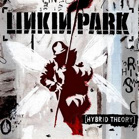
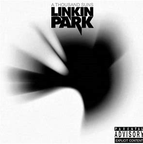

Linkin Park
Es una banda estadounidense de rock alternativo formada en 1996 en Agoura Hills, California. Con un estilo que mezcla géneros como el rock, el metal, el rap y la electrónica, la banda alcanzó fama mundial con su álbum debut Hybrid Theory (2000), considerado uno de los más exitosos de la década. Canciones icónicas como "In the End" y "Crawling" establecieron su popularidad, y su capacidad de reinventarse les permitió mantenerse relevantes a lo largo de los años. Son reconocidos por su innovadora fusión de sonidos y letras introspectivas, abordando temas emocionales y personales.
Álbumes

HYBRID THEORY
Año: 2000

A THOUSAND SUNS
Año: 2010